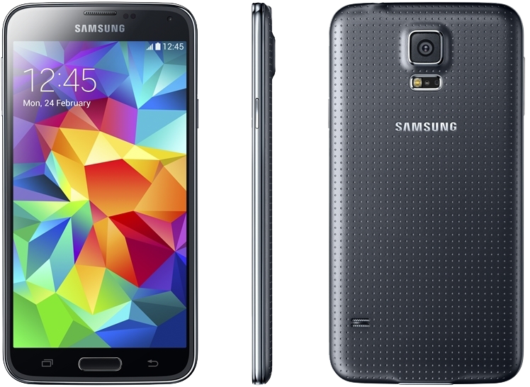

삼성 갤럭시 S5
1. 외관

삼성전자가 2014년 2월 24일에 공개한 안드로이드 스마트폰.
< id="galaxys504">2. 사양
| 프로세서 | 퀄컴 스냅드래곤 801 MSM8x74AC SoC. Qualcomm Krait 400 MP4 2.5 GHz CPU, 퀄컴 Adreno 330 578 MHz GPU | ||
| 메모리 | 2 GB LPDDR3 SDRAM, 16 / 32 GB 내장 메모리, micro SDXC (최대 128 GB 지원) | ||
| 디스플레이 |
5.1인치 FHD(1920 x 1080) 다이아몬드 형태 RG-BG 펜타일 서브픽셀 방식의 삼성D Full-HD Super AMOLED (432 ppi) 멀티터치 지원 정전식 터치 스크린 with 슈퍼 센서티브 터치, 고릴라 글래스 3 |
||
| 네트워크 | 기본 | HSPA+ 42Mbps, HSDPA & HSUPA & UMTS, GSM & EDGE | Wi-Fi 802.11a/b/g/n/ac, 블루투스 4.0+BLE, NFC, ANT+ |
| 선택 | LTE-2CA Cat.4, TD-LTE, WiBro Evolution, TD-SCDMA, CDMA & EV-DO Rev. A | ||
| 카메라 | 전면 200만 화소, 후면 1,600만 화소 위상차 검출 AF 및 LED 플래시 | ||
| 배터리 | Li-ion 2800 mAh 착탈식 | ||
| 운영체제 | 안드로이드 4.4 (KitKat) | ||
| 규격 | 72.5 x 142 x 8.1 mm, 145 g | ||
3. 상세
갤럭시 S를 시작으로, 매해 상반기에 공개된 삼성전자의 안드로이드 플래그쉽 스마트폰 시리즈인 갤럭시 S 시리즈의 2014년도형 모델이자 다섯 번째 모델이다.
갤럭시 S III에서 갤럭시 S4로 넘어갔을 당시, 제품 규격은 유지하면서 디스플레이 크기를 키우는데 성공해 어느정도 균형감 있다는 평을 받았지만,
갤럭시 S4에서 단지 0.1인치 더 커졌으면서 제품 규격 역시 더 커진 것에 대해서도 비판적인 의견이 많다. 또한 두께마저 두꺼워졌다.
사양 자체는 AP 제조사들의 신제품들이 2013년 제품의 연장선 및 개선판으로 2014년 상반기를 공략하고 있기 때문에 전작 보다 크게 개선되지 않았다.
AP로 퀄컴 스냅드래곤 801 MSM8974AC를 사용하며 많은 사람들이 기대했던 32-bit에서 64-bit로의 전환은 이루어지지 않았다.
RAM 용량은 전작과 같은 2 GB이다. 이미 3 GB RAM을 사용한 모델인 갤럭시 노트 3가 있음에도 불구하고 2 GB RAM을 사용한 것에 대해서도 여러가지 의견이 나오고 있다.
내장 메모리는 16 GB와 32 GB 모델로 나뉘며 역시 64 GB 모델은 없다.
디스플레이는 5.1인치 Full-HD 해상도를 지원한다. 패널은 Full-HD Super AMOLED를 사용하며 전작이 사용한 패널과 이름은 같다.
서브픽셀 배열역시 전작과 동일한 다이아몬드 형태의 RG-BG 펜타일 서브픽셀을 가졌다. 다만, 소자 크기가 변동되고 간격 등이 조정되었다고 한다.
또한 최대 밝기가 TFT-LCD를 탑재한 경쟁사의 플래그쉽 스마트폰과 맞먹을 정도의 500 nit로 증가했으며, 최소 밝기 또한 2 nit까지 줄일 수 있다.
지원 LTE 레벨은 Cat.4로 다운로드 최대 150 Mbps, 업로드 최대 50 Mbps를 보장한다. 광대역이 구축된 LTE에서 정상적으로 사용이 가능하다.
VoLTE는 글로벌 모델이 기본적으로 지원하는 최초의 갤럭시 S 시리즈다. 2 Band 캐리어 어그리게이션과 TD-LTE의 경우 서비스하는 이동통신사에 따라 추가적으로 지원한다.
또한 Wi-Fi와 데이터 셀룰러를 묶어서 안정적이고 빠른 '다운로드 부스터' 기능을 지원한다. LTE Cat.6 지원 모델은 이를 전부 포함해 다운로드 최대 300 Mbps까지 보장한다.
생체 인식 기술의 경우 지문인식이 들어가며 HTC의 ONE MAX나 팬택의 베가 LTE A와 같은 스와이핑 방식이다.